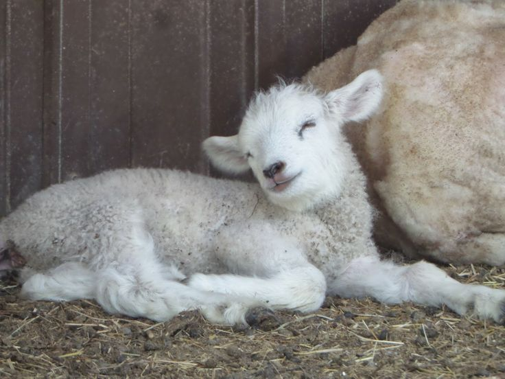
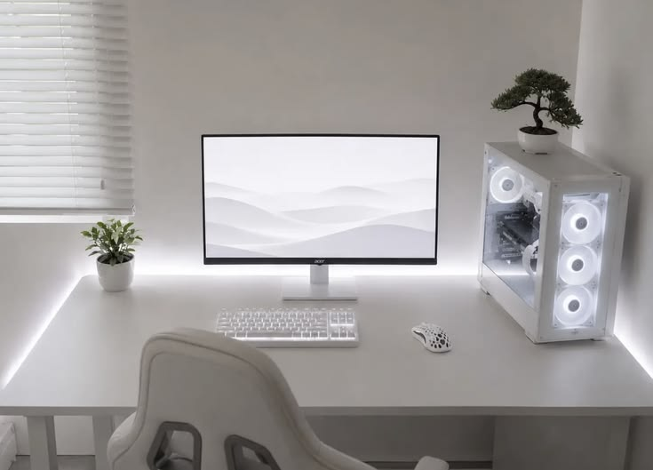

Sobre Mí
Mi Nombre es Eduardo Rubio Laviada. Tengo 22 años y vivo en Mérida, Yucatán.
Me encuentro estudiando la Licenciatura Ejecutiva de Programación y Transformación Digital en la EBC.
Me considero una persona muy empática y sensible, valores los cuales considero de suma importancia y en los que baso mis acciones.
Actualmente tengo como meta aprender y mejorar como desarrollador Front End.

Mis Intereses
Muchas personas a mi alrededor me conocen o identifican por mis intereses muy marcados. Tienden a volverse una parte fundamental de mi personalidad y mi forma de vivir y desarrollarme más que lo suele ser para otras personas.

A lo largo de mi vida siempre he sido una persona muy tranquila y eso se refleja notoriamente en mis intereses y las cosas a las que suelen llamar mi interés.
Desde chico tuve muchísimo interés e intuición para la tecnología, que eventualmente se fue expandiendo a un interés por las redes sociales y los videojuegos principalmente, son lo que más me gusta y disfruto por horas y horas todos los días.
La música de igual manera es algo que me llena muchísimo, siendo el Vocaloid y el K-pop mis primeras introducciones a un gusto musical. El cual con el paso de los años ha cambiado bastante, pues últimamente he encontrado mi lugar en géneros como el Folk y todos sus derivados.
Por último, las redes sociales han tenido y seguirán teniendo un impacto alto en mi vida, pues es en donde más puedo expresar todos mis intereses con otros usuarios, de los cuales varios se han convertido en personas muy especiales para mí.
Habilidades
Poco a poco voy adquiriendo conocimientos en mi carrera. Éstas son algunas de las habilidades que he adquirido en mi primer año como estudiante en la EBC.